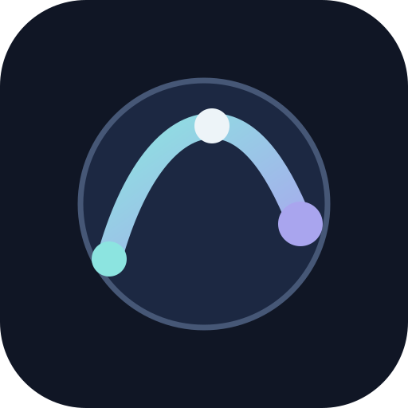
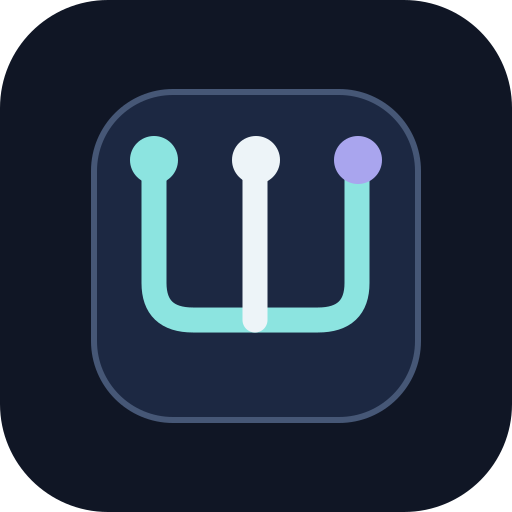
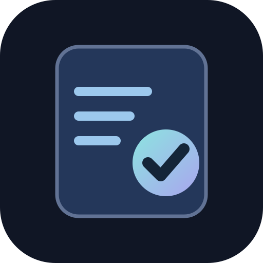
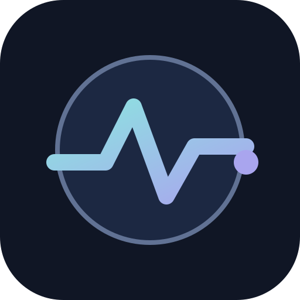

01 · 추천
기록의 궤적
한 번의 기록이 점이 되고, 시간이 지나며 변화의 선이 됩니다.
48px / 24px
앱 아이콘과 작은 파비콘을 함께 비교하세요. 디자인 시안이며 현재 앱에는 적용되지 않았습니다.

한 번의 기록이 점이 되고, 시간이 지나며 변화의 선이 됩니다.

몸·식단·운동을 따로 모아 하나의 일지로 잇는 형태입니다.
마웨로그의 M을 기록의 연결선으로 읽히게 합니다.

기록을 끝내는 작은 성취감을 체크 표시로 담았습니다.

현재 맥박 로고를 새 팔레트로 정돈한 전환형입니다.